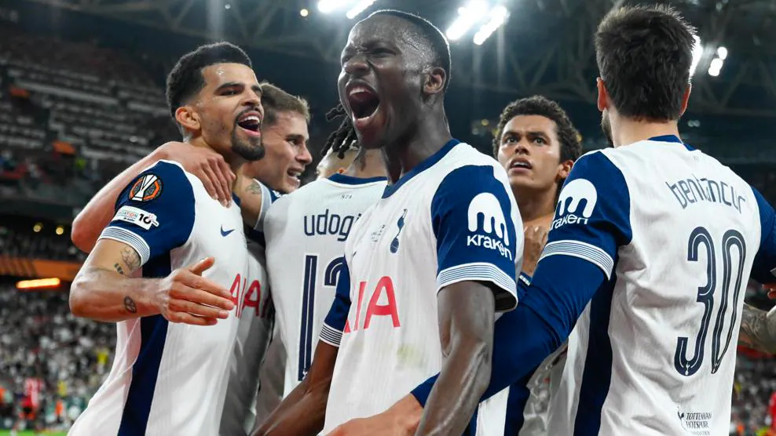
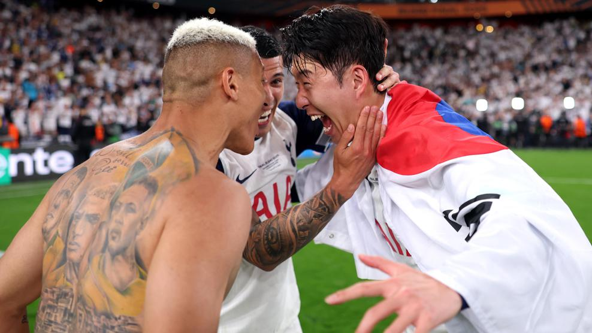
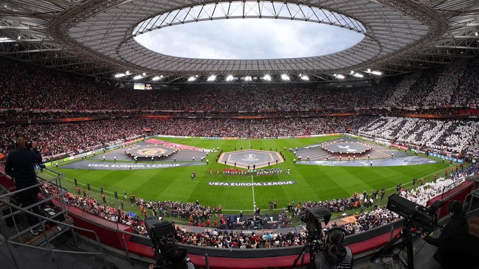

Tottenham 1-0 Manchester United: Spurs win 2025 Europa League
Wednesday, May 21, 2025
Brennan Johnson's goal late in the first half proved the difference in Bilbao as Ange Postecoglou's side won the UEFA Europa League.

Brennan Johnson bundled in the only goal of a tense 2025 UEFA Europa League final as Tottenham Hotspur ended a 17-year wait for silverware with victory over Manchester United in Bilbao.
Match in brief: Spurs take their chance
The first half was a proper arm wrestle, with both sides struggling to find their Europa League groove. Amad Diallo flashed an early effort across goal and Destiny Udogie menaced down the Spurs left but both sides were struggling to get into their Europa League groove; it was nervy, very stop-start.
We looked set to reach half-time goalless but then came a nice move down the left, Richarlison and Rodrigo Bentancur involved before Pape Sarr curled in an inswinger. Brennan Johnson got the first touch, it ricocheted off Luke Shaw before Johnson got another feather of a touch on it. Scrappy? Yes. Did Spurs care? No.
United appeared for the second period early and with renewed impetus, and so nearly had an equaliser midway through the half when Micky van der Ven brilliantly kept out Rasmus Højlund's goalbound header. Bruno Fernandes and substitute Alejandro Garnacho threatened but, for the most part, Spurs were relatively comfortable.
To dare is to do, says the Tottenham motto. And in Bilbao, once Guglielmo Vicario had kept out Luke Shaw's 97th-minute header, they did. Forty-one years since their second UEFA Cup/Europa League title, they have a third and the significant prize of a place in the league phase of next season's UEFA Champions League.
Hankook Player of the Match: Cristian Romero

Reporter verdict: Mark Pettit, Tottenham
"Spurs have made a name for playing swashbuckling, attacking football but never getting over the line when it mattered. Tonight, that all changed. This was not easy on the eye, or the nerves, but Postecoglou's men showed the grit, determination and resilience to get the job done under a constant stream of attacks. A first European trophy since 1984."
Reporter verdict: Steve Bates, Man Utd
"No fairy tale end to the campaign for United – and no European football either next season as their first loss in the competition agonisingly comes in this final. They pushed hard in the second half to find an equaliser to cancel out Johnson's scrambled effort but the magic and the goals which carried them so spectacularly past Lyon and Athletic Club eluded Ruben Amorim and his team in Bilbao."
Reaction
Ange Postecoglou, Tottenham coach:"I'm still trying to take it all in. I know what it means for this football club. Unfortunately, the longer it goes on, the harder it is to break that cycle sometimes. I could sense the nervousness in everybody at the club because they've been in this situation before. Until you take that monkey off your back, you never understand what it feels like."Ruben Amorim, Man Utd coach:
"I just have to share the pain with our fans - they deserve better. We were the better team and the guys tried everything to win the game. There were times when we didn't create situations but that is not now. I am confident in my players – it's my job to improve them."Brennan Johnson, Tottenham goalscorer:
"I'm so happy right now. This is what it's all about. This club hasn't won a trophy for 17 years. This is what it means; it means so much. Ever since I came here it's been, 'Tottenham are a good team but can never get it done' – we got it done."Guglielmo Vicario, Tottenham goalkeeper:
"I still can't believe what we've done; it is unbelievable. We have written history, in the real sense of the term. This group of players has written history in 2025. We knew before the game that we needed the effort from everyone and we did it, we delivered. Now we must celebrate."Glen Hoddle, BT Sport
"It's incredible – I've got no nails left! It's fantastic for the club. Cup finals are about winning games and they got over the line. It's a wonderful night for those Spurs fans around the stadium."
Key stats
- Spurs have moved second on the all-time list with three UEFA Cup/Europa League titles, level with Atlético de Madrid, Inter, Juventus and Liverpool. Only Sevilla (seven) have won more.
- Tottenham had never won a game in Spain (D3 L4) – before Bilbao.
- Spurs won four out of four against United in 2024/25: two Premier League meetings and a League Cup victory preceding their European triumph.
- Five of the last six Europa League finals have been decided by one goal or fewer.
- This was a record sixth all-English major UEFA men's club competition final, one more than Spain and Italy.
- No team has won more games in the UEFA Cup/Europa League than Tottenham, whose 98th victory in the competition took them clear of Roma.
- Only one of United's last 66 UEFA club competition matches finished goalless.
Line-ups
Tottenham:
Vicario; Porro, Romero, Van de Ven, Udogie (Spence 90); Sarr (Gray 90), Bissouma, Bentancur; Johnson (Danso 78), Solanke, Richarlison
(Son 67)
Onana; Yoro, Maguire, Shaw; Mazraoui (Dalot 85), Casemiro, Fernandes, Dorgu (Mainoo 90); Diallo, Højlund (Zirkzee 71), Mount (Garnacho 71)